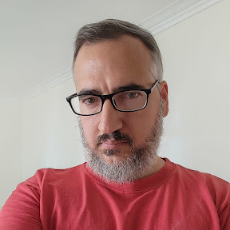

Investigador Independiente del CONICET · Doctor en Historia
Historiador especializado en historia social de la clase trabajadora argentina, con foco en las comunidades laborales portuarias del sudeste bonaerense. Mi investigación abarca desde las condiciones de trabajo y vida, los procesos de organización y lucha de lxs trabajadorxs portuarixs entre fines del siglo XIX y principios del XXI, hasta las aplicaciones de técnicas computacionales para el procesamiento de fuentes históricas y el análisis de la conflictividad social.
Áreas de trabajo
Trayectoria
Producción académica
54 publicaciones registradas en CONICET Digital · 737 citas en Google Académico
Formación
Formación de recursos humanos
Vinculación e investigación
Perfiles
Comunicación